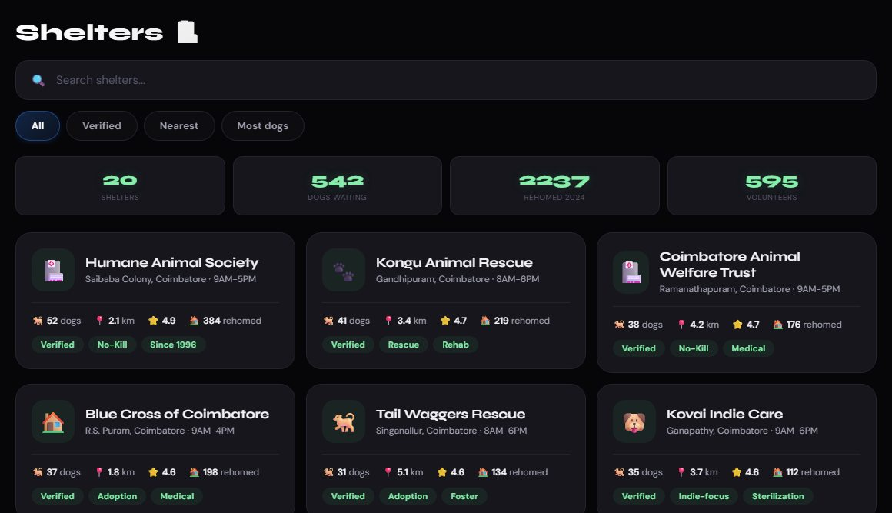

05 · Web platform, live
PawFinder
An adoption and rescue platform for India that connects people with stray dogs, shelters, emergency helplines and foster programmes.
Built by Adithya V, computer science student at KCT, Coimbatore.


About PawFinder
PawFinder connects people in India with stray and shelter dogs. You can browse dogs with health and personality records, filter by age, size and vaccination, and see which dogs urgently need a home.
The platform covers the whole journey: a shelter directory, guided adoption applications with live status, short-term fostering, volunteering, chat with shelters, rescue reports, emergency helplines and a library of care articles.
It is built with Node.js and Express on SQLite, with live chat over Socket.IO, and also ships as a Windows desktop app built with Electron.
Related work


More projects by Adithya V
- TQQ ChatboxFive fine-tuned models, one app
- Ryuu Explainer AIOffline AI assistant
- KCT IDEA Lab websiteCollege website, built solo
- Personality AICharacter chatbot
- Automobile LabHardware and web interface
- CS GPT for CBSE 11 & 12Learning tool
- Ryuu v1 modelsFive open models